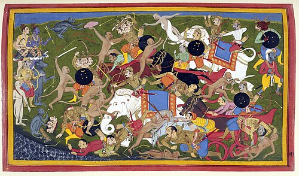
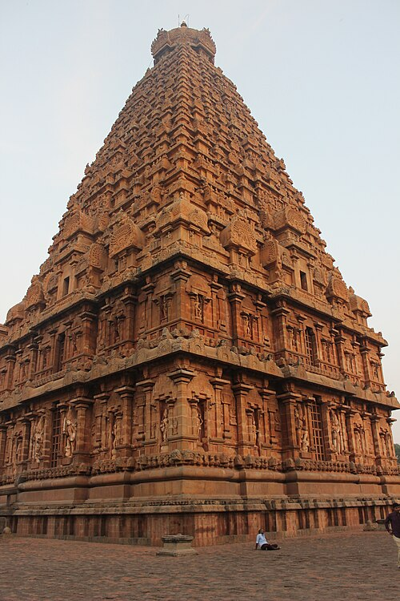
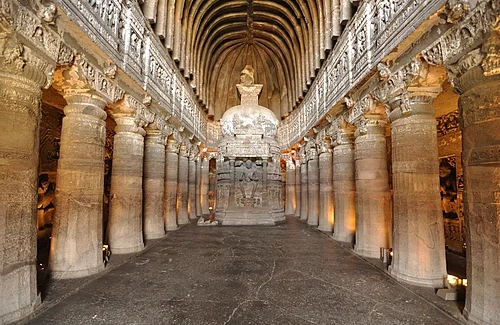
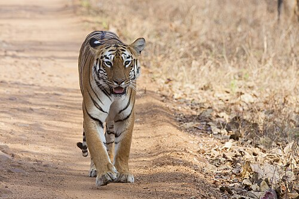
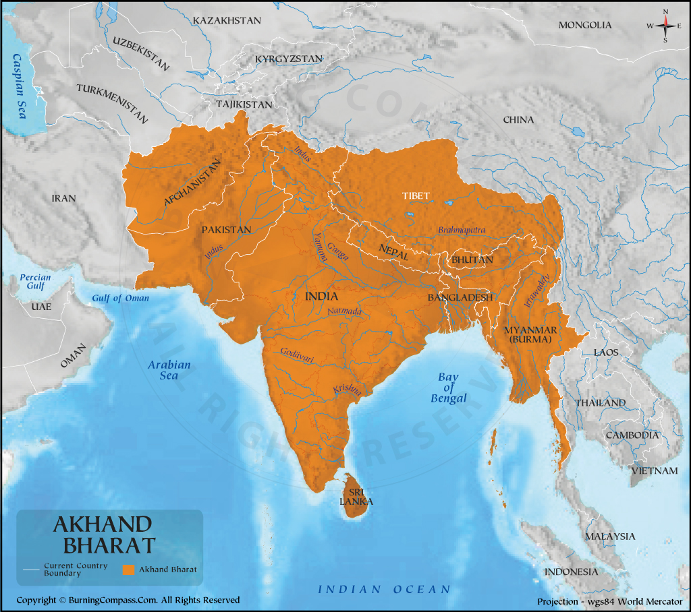
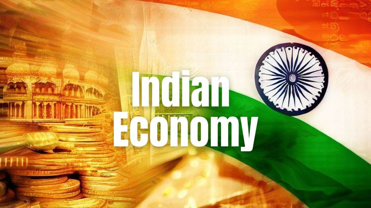
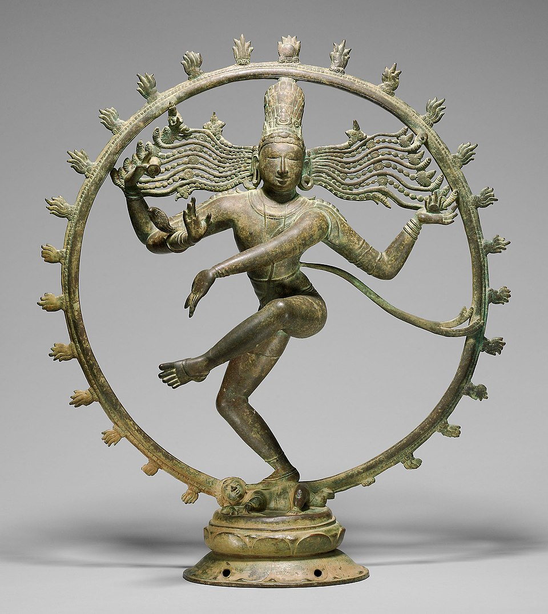
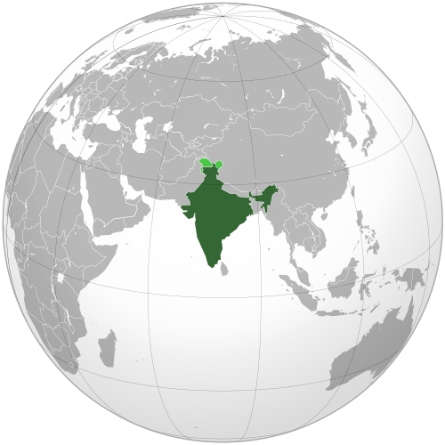

From Wikipedia, the free encyclopedia
This article is about the country. For other uses, see India (disambiguation).
India, officially the
Republic of India,[j][20] is a country in South Asia. It is the seventh-largest country by area; the most populous country since 2023;[21] and, since its independence in 1947, the world's most populous democracy.[22][23][24] Bounded by the Indian Ocean on the south, the Arabian Sea on the southwest, and the Bay of Bengal on the southeast, it shares land borders with Pakistan to the west;[k] China, Nepal, and Bhutan to the north; and Bangladesh and Myanmar to the east. In the Indian Ocean, India is near Sri Lanka and the Maldives; its Andaman and Nicobar Islands share a maritime border with Myanmar, Thailand, and Indonesia.
Modern humans arrived on the Indian subcontinent from Africa no later than 55,000 years ago.[26][27][28] Their long occupation, predominantly in isolation as hunter-gatherers, has made the region highly diverse.[29] Settled life emerged on the subcontinent in the western margins of the Indus river basin 9,000 years ago, evolving gradually into the Indus Valley Civilisation of the third millennium BCE.[30] By 1200 BCE, an archaic form of Sanskrit, an Indo-European language, had diffused into India from the northwest.[31][32] Its hymns recorded the early dawnings of Hinduism in India.[33] India's pre-existing Dravidian languages were supplanted in the northern regions.[34] By 400 BCE, caste had emerged within Hinduism,[35] and Buddhism and Jainism had arisen, proclaiming social orders unlinked to heredity.[36] Early political consolidations gave rise to the loose-knit Maurya and Gupta Empires.[37] Widespread creativity suffused this era,[38] but the status of women declined,[39] and untouchability became an organised belief.[l][40] In South India, the Middle kingdoms exported Dravidian language scripts and religious cultures to the kingdoms of Southeast Asia.[41]
In the early medieval era, Christianity, Islam, Judaism, and Zoroastrianism became established on India's southern and western coasts.[42] Muslim armies from Central Asia intermittently overran India's northern plains in the second millennium.[43] The resulting Delhi Sultanate drew northern India into the cosmopolitan networks of medieval Islam.[44] In south India, the Vijayanagara Empire created a long-lasting composite Hindu culture.[45] In the Punjab, Sikhism emerged, rejecting institutionalised religion.[46] The Mughal Empire ushered in two centuries of economic expansion and relative peace,[47] leaving a rich architectural legacy.[48][49] Gradually expanding rule of the British East India Company turned India into a colonial economy but consolidated its sovereignty.[50] British Crown rule began in 1858. The rights promised to Indians were granted slowly,[51][52] but technological changes were introduced, and modern ideas of education and the public life took root.[53] A nationalist movement emerged in India, the first in the non-European British Empire and an influence on other nationalist movements.[54][55] Noted for nonviolent resistance after 1920,[56] it became the primary factor in ending British rule.[57] In 1947, the British Indian Empire was partitioned into two independent dominions,[58][59][60][61] a Hindu-majority dominion of India and a Muslim-majority dominion of Pakistan. A large-scale loss of life and an unprecedented migration accompanied the partition.[62]
India has been a federal republic since 1950, governed through a democratic parliamentary system. It is a pluralistic, multilingual and multi-ethnic society. India's population grew from 361 million in 1951 to over 1.4 billion in 2023.[63] During this time, its nominal per capita income increased from US$64 annually to US$2,601, and its literacy rate from 16.6% to 74%. A comparatively destitute country in 1951,[64] India has become a fast-growing major economy and a hub for information technology services, with an expanding middle class.[65] Indian movies and music increasingly influence global culture.[66] India has reduced its poverty rate, though at the cost of increasing economic inequality.[67] It is a nuclear-weapon state that ranks high in military expenditure. It has disputes over Kashmir with its neighbours, Pakistan and China, unresolved since the mid-20th century.[68] Among the socio-economic challenges India faces are gender inequality, child malnutrition,[69] and rising levels of air pollution.[70] India's land is megadiverse with four biodiversity hotspots.[71] India's wildlife, which has traditionally been viewed with tolerance in its culture,[72] is supported in protected habitats.
Etymology
Main article: Names for India
According to the Oxford English Dictionary (2009), the name "India" is derived from the Classical Latin India, a reference to South Asia and an uncertain region to its east. In turn "India" derived successively from Hellenistic Greek India (Ἰνδία), Ancient Greek Indos (Ἰνδός), Old Persian Hindush (an eastern province of the Achaemenid Empire), and ultimately its cognate, the Sanskrit Sindhu, or 'river'—specifically the Indus River, and by extension its well-settled southern basin.[73][74] The Ancient Greeks referred to the Indians as Indoi, 'the people of the Indus'.[75]
The term Bharat (Bhārat; pronounced [ˈbʱaːɾət] ⓘ), mentioned in both Indian epic poetry and the Constitution of India,[76][77] is used in its variations by many Indian languages. A modern rendering of the historical name Bharatavarsha, which applied originally to North India,[78][79] Bharat gained increased currency from the mid-19th century as a native name for India.[76][80]
Hindustan ([ɦɪndʊˈstaːn] ⓘ) is a Middle Persian name for India that became popular by the 13th century,[81] and was used widely since the era of the Mughal Empire. The meaning of Hindustan has varied, referring to a region encompassing the northern Indian subcontinent (present-day northern India and Pakistan) or to India in its near entirety.[76][80][82]
History
Main article: History of India
Ancient India
55,000 years ago, the first modern humans, or Homo sapiens, arrived on the Indian subcontinent from Africa.[26][27][28] The earliest known modern human remains in South Asia date to about 30,000 years ago.[26] After 6500 BCE, evidence for domestication of food crops and animals, construction of permanent structures, and storage of agricultural surplus appeared in Mehrgarh and other sites in Balochistan, Pakistan.[84] These gradually developed into the Indus Valley Civilisation,[85][84] the first urban culture in South Asia,[86] which flourished during 2500–1900 BCE in Pakistan and western India.[87] Centred around cities such as Mohenjo-daro, Harappa, Dholavira, and Kalibangan, and relying on varied forms of subsistence, the civilisation engaged robustly in crafts production and wide-ranging trade.[86]
During the period 2000–500 BCE, many regions of the subcontinent transitioned from the Chalcolithic cultures to the Iron Age ones.[88] The Vedas, the oldest scriptures associated with Hinduism,[89] were composed during this period,[90] and historians have analysed these to posit a Vedic culture in the Punjab region and the upper Gangetic Plain.[88] Most historians also consider this period to have encompassed several waves of Indo-Aryan migration into the subcontinent from the north-west.[89] The caste system, which created a hierarchy of priests, warriors, and free peasants, but which excluded indigenous peoples by labelling their occupations impure, arose during this period.[91] On the Deccan Plateau, archaeological evidence from this period suggests the existence of a chiefdom stage of political organisation.[88] In South India, a progression to sedentary life is indicated by the large number of megalithic monuments dating from this period,[92] as well as by nearby traces of agriculture, irrigation tanks, and craft traditions.[92]
In the late Vedic period, around the 6th century BCE, the small states and chiefdoms of the Ganges Plain and the north-western regions had consolidated into 16 major oligarchies and monarchies that were known as the mahajanapadas.[93][94] The emerging urbanisation gave rise to non-Vedic religious movements, two of which became independent religions. Jainism came into prominence during the life of its exemplar, Mahavira.[95] Buddhism, based on the teachings of Gautama Buddha, attracted followers from all social classes excepting the middle class; chronicling the life of the Buddha was central to the beginnings of recorded history in India.[96][97][98]
In an age of increasing urban wealth, both religions held up renunciation as an ideal,[99] and both established long-lasting monastic traditions. Politically, by the 3rd century BCE, the kingdom of Magadha had annexed or reduced other states to emerge as the Maurya Empire.[100] The empire was once thought to have controlled most of the subcontinent except the far south, but its core regions are now thought to have been separated by large autonomous areas.[101][102] The Mauryan kings are known as much for their empire-building and determined management of public life as for Ashoka's renunciation of militarism and far-flung advocacy of the Buddhist dhamma.[103][104]
The Sangam literature of the Tamil language reveals that, between 200 BCE and 200 CE, the southern peninsula was ruled by the Cheras, the Cholas, and the Pandyas, dynasties that traded extensively with the Roman Empire and with West and Southeast Asia.[105][106] In North India, Hinduism asserted patriarchal control within the family, leading to increased subordination of women.[107][100] By the 4th and 5th centuries, the Gupta Empire had created a complex system of administration and taxation in the greater Ganges Plain; this system became a model for later Indian kingdoms.[108][109] Under the Guptas, a renewed Hinduism based on devotion, rather than the management of ritual, began to assert itself.[110] This renewal was reflected in a flowering of sculpture and architecture, which found patrons among an urban elite.[109] Classical Sanskrit literature flowered as well, and Indian science, astronomy, medicine, and mathematics made significant advances.[109]

Medeival India
The Indian early medieval age, from 600 to 1200 CE, is defined by regional kingdoms and cultural diversity.[111] When Harsha of Kannauj, who ruled much of the Indo-Gangetic Plain from 606 to 647 CE, attempted to expand southwards, he was defeated by the Chalukya ruler of the Deccan.[112] When his successor attempted to expand eastwards, he was defeated by the Pala king of Bengal.[112] When the Chalukyas attempted to expand southwards, they were defeated by the Pallavas from farther south, who in turn were opposed by the Pandyas and the Cholas from still farther south.[112] No ruler of this period was able to create an empire and consistently control lands much beyond their core region.[111] During this time, pastoral peoples, whose land had been cleared to make way for the growing agricultural economy, were accommodated within caste society, as were new non-traditional ruling classes.[113] The caste system consequently began to show regional differences.[113]
In the 6th and 7th centuries, the first devotional hymns were created in the Tamil language.[114] They were imitated all over India and led to both the resurgence of Hinduism and the development of all modern languages of the subcontinent.[114] Indian royalty, big and small, and the temples they patronised drew citizens in great numbers to the capital cities, which became economic hubs as well.[115] Temple towns of various sizes began to appear everywhere as India underwent another urbanisation.[115] By the 8th and 9th centuries, the effects were felt in Southeast Asia, as South Indian culture and political systems were exported to lands that became part of modern-day Myanmar, Thailand, Laos, Brunei, Cambodia, Vietnam, Philippines, Malaysia, and Indonesia.[116] Indian merchants, scholars, and sometimes armies were involved in this transmission; Southeast Asians took the initiative as well, with many sojourning in Indian seminaries and translating Buddhist and Hindu texts into their languages.[116]
After the 10th century, Muslim Central Asian nomadic clans, using swift-horse cavalry and raising vast armies united by ethnicity and religion, repeatedly overran South Asia's north-western plains, leading eventually to the establishment of the Islamic Delhi Sultanate in 1206.[117] The sultanate was to control much of North India and to make many forays into South India. Although at first disruptive for the Indian elites, the sultanate largely left its vast non-Muslim subject population to its own laws and customs.[118][119]
By repeatedly repulsing Mongol raiders in the 13th century, the sultanate saved India from the devastation visited on West and Central Asia, setting the scene for centuries of migration of fleeing soldiers, learned men, mystics, traders, artists, and artisans from that region into the subcontinent, thereby creating a syncretic Indo-Islamic culture in the north.[120][121] The sultanate's raiding and weakening of the regional kingdoms of South India paved the way for the indigenous Vijayanagara Empire.[122] Embracing a strong Shaivite tradition and building upon the military technology of the sultanate, the empire came to control much of peninsular India,[123] and was to influence South Indian society for long afterwards.[122]

Geography
India accounts for the bulk of the Indian subcontinent, lying atop the Indian tectonic plate, a part of the Indo-Australian Plate.[174] India's defining geological processes began 75 million years ago when the Indian Plate, then part of the southern supercontinent Gondwana, began a north-eastward drift caused by seafloor spreading to its south-west, and later, south and south-east.[174] Simultaneously, the vast Tethyan oceanic crust, to its northeast, began to subduct under the Eurasian Plate.[174] These dual processes, driven by convection in the Earth's mantle, both created the Indian Ocean and caused the Indian continental crust eventually to under-thrust Eurasia and to uplift the Himalayas.[174] Immediately south of the emerging Himalayas, plate movement created a vast crescent-shaped trough that rapidly filled with river-borne sediment[175] and now constitutes the Indo-Gangetic Plain.[176] The original Indian plate makes its first appearance above the sediment in the ancient Aravalli range, which extends from the Delhi Ridge in a southwesterly direction. To the west lies the Thar Desert, the eastern spread of which is checked by the Aravallis.[177][178][179]
The remaining Indian Plate survives as peninsular India, the oldest and geologically most stable part of India. It extends as far north as the Satpura and Vindhya ranges in central India. These parallel chains run from the Arabian Sea coast in Gujarat in the west to the coal-rich Chota Nagpur Plateau in Jharkhand in the east.[180] To the south, the remaining peninsular landmass, the Deccan Plateau, is flanked on the west and east by coastal ranges known as the Western and Eastern Ghats;[181] the plateau contains the country's oldest rock formations, some over one billion years old. Constituted in such fashion, India lies to the north of the equator between 6° 44′ and 35° 30′ north latitude[m] and 68° 7′ and 97° 25′ east longitude.[182]
India's coastline measures 7,517 kilometres (4,700 mi) in length; of this distance, 5,423 kilometres (3,400 mi) belong to peninsular India and 2,094 kilometres (1,300 mi) to the Andaman, Nicobar, and Lakshadweep island chains.[183] According to the Indian naval hydrographic charts, the mainland coastline consists of the following: 43% sandy beaches; 11% rocky shores, including cliffs; and 46% mudflats or marshy shores.[183] Major Himalayan-origin rivers that substantially flow through India include the Ganges and the Brahmaputra, both of which drain into the Bay of Bengal.[184]
Important tributaries of the Ganges include the Yamuna and the Kosi. The Kosi's extremely low gradient, caused by long-term silt deposition, leads to severe floods and course changes.[185][186] Major peninsular rivers, whose steeper gradients prevent their waters from flooding, include the Godavari, the Mahanadi, the Kaveri, and the Krishna, which also drain into the Bay of Bengal;[187] and the Narmada and the Tapti, which drain into the Arabian Sea.[188] Coastal features include the marshy Rann of Kutch of western India and the alluvial Sundarbans delta of eastern India; the latter is shared with Bangladesh.[189] India has two archipelagos: the Lakshadweep, coral atolls off India's south-western coast; and the Andaman and Nicobar Islands, a volcanic chain in the Andaman Sea.[190]

Politics
India is a parliamentary republic with a multi-party system.[227] It has six recognised national parties, including the Indian National Congress (INC) and the Bharatiya Janata Party (BJP), and over 50 regional parties.[228] Congress is considered the ideological centre in Indian political culture,[229] whereas the BJP is right-wing to far-right.[230][231][232] From 1950 to the late 1980s, Congress held a majority in India's parliament. Afterwards, it increasingly shared power with the BJP,[233] as well as with powerful regional parties, which forced multi-party coalition governments at the centre.[234]
In the general elections in 1951, 1957, and 1962, Congress, led by Jawaharlal Nehru, won easy victories. On Nehru's death in 1964, Lal Bahadur Shastri briefly became prime minister; he was succeeded in 1966, by Nehru's daughter Indira Gandhi, who led the Congress to election victories in 1967 and 1971. Following public discontent with the state of emergency Indira Gandhi had declared in 1975, Congress was voted out of power in 1977; Janata Party, which had opposed the emergency, was voted in. Its government lasted two years; Morarji Desai and Charan Singh served as prime ministers. After Congress was returned to power in 1980, Indira Gandhi was assassinated and succeeded by Rajiv Gandhi, who won comfortably in the elections later that year. A National Front coalition led by the Janata Dal in alliance with the Left Front won the 1989 elections, with the subsequent government lasting just under two years, and V.P. Singh and Chandra Shekhar serving as prime ministers.[235] In the 1991 Indian general election, Congress, as the largest single party, formed a minority government led by P. V. Narasimha Rao.[236]
After the 1996 Indian general election, the BJP formed a government briefly; it was followed by United Front coalitions, which depended on external political support. Two prime ministers served during this period: H.D. Deve Gowda and I.K. Gujral. In 1998, the BJP formed a coalition—the National Democratic Alliance (NDA). Led by Atal Bihari Vajpayee, the NDA became the first non-Congress, coalition government to complete a five-year term.[237] In the 2004 Indian general elections, no party won an absolute majority. Still, the Congress emerged as the largest single party, forming another successful coalition: the United Progressive Alliance (UPA). It had the support of left-leaning parties and MPs who opposed the BJP. The UPA returned to power in the 2009 general election with increased numbers, and it no longer required external support from India's communist parties.[238] Manmohan Singh became the first prime minister since Jawaharlal Nehru in 1957 and 1962 to be re-elected to a consecutive five-year term.[239] In the 2014 general election, the BJP became the first political party since 1984 to win an absolute majority.[240] In the 2019 general election, the BJP regained an absolute majority. In the 2024 general election, a BJP-led NDA coalition formed the government. Narendra Modi, a former chief minister of Gujarat, is in his third term as the prime minister of India and has served in the position since 26 May 2014.[241]

Economy
According to the International Monetary Fund (IMF), the Indian economy in 2024 was nominally worth $3.94 trillion; it is the fifth-largest economy by market exchange rates and is, at around $15.0 trillion, the third-largest by purchasing power parity (PPP).[16] With its average annual GDP growth rate of 5.8% over the past two decades, and reaching 6.1% during 2011–2012,[290] India is one of the world's fastest-growing economies.[291] However, due to its low GDP per capita—which ranks 136th in the world in nominal per capita income and 125th in per capita income adjusted for purchasing power parity (PPP)—the vast majority of Indians fall into the low-income group.[292][293]
Until 1991, all Indian governments followed protectionist policies that were influenced by socialist economics. Widespread state intervention and regulation largely walled the economy off from the outside world. An acute balance of payments crisis in 1991 forced the nation to liberalise its economy;[294] since then, it has moved increasingly towards a free-market system[295][296] by emphasising both foreign trade and direct investment inflows.[297] India has been a member of World Trade Organization since 1 January 1995.[298]
The 522-million-worker Indian labour force is the world's second largest, as of 2017.[281] The service sector makes up 55.6% of GDP, the industrial sector 26.3% and the agricultural sector 18.1%. India's foreign exchange remittances of US$100 billion in 2022,[299] highest in the world, were contributed to its economy by 32 million Indians working in foreign countries.[300] In 2006, the share of external trade in India's GDP stood at 24%, up from 6% in 1985.[295] In 2008, India's share of world trade was 1.7%;[301] In 2021, India was the world's ninth-largest importer and the sixteenth-largest exporter.[302] Between 2001 and 2011, the contribution of petrochemical and engineering goods to total exports grew from 14% to 42%.[303] India was the world's second-largest textile exporter after China in the 2013 calendar year.[304]
Averaging an economic growth rate of 7.5% for several years before 2007,[295] India has more than doubled its hourly wage rates during the first decade of the 21st century.[305] Some 431 million Indians have left poverty since 1985; India's middle classes are projected to number around 580 million by 2030.[306] In 2024, India's consumer market was the world's third largest.[307] India's nominal GDP per capita increased steadily from US$308 in 1991, when economic liberalisation began, to US$1,380 in 2010, to an estimated US$2,731 in 2024. It is expected to grow to US$3,264 by 2026.[16]

Demographics
With an estimated 1,428,627,663 residents in 2023, India is the world's most populous country.[13] 1,210,193,422 residents were reported in the 2011 provisional census report.[337] Its population grew by 17.64% from 2001 to 2011,[338] compared to 21.54% growth in the previous decade (1991–2001).[338] The human sex ratio, according to the 2011 census, is 940 females per 1,000 males.[337] The median age was 28.7 in 2020.[281]
The first post-colonial census, conducted in 1951, counted 361 million people.[339] Medical advances made in the last 50 years as well as increased agricultural productivity brought about by the "Green Revolution" have caused India's population to grow rapidly.[340] The life expectancy in India is 70 years to 71.5 years for women, and 68.7 years for men.[281] There are around 93 physicians per 100,000 people.[341]

Culture
The Indian caste system embodies much of the social stratification and many of the social restrictions found on the Indian subcontinent. Social classes are defined by thousands of endogamous hereditary groups, often termed as jātis, or "castes".[366] India abolished untouchability in 1950 with the adoption of the constitution and has since enacted other anti-discriminatory laws and social welfare initiatives.[r] However, the system continues to be dominant in India, and caste-based inequality, discrimination, segregation, and violence persist.[368][369]
Multi-generational patrilineal joint families have been the norm in India, though nuclear families are becoming common in urban areas.[370] An overwhelming majority of Indians have their marriages arranged by their parents or other family elders.[371] Marriage is thought to be for life,[371] and the divorce rate is extremely low,[372] with less than one in a thousand marriages ending in divorce.[373] Child marriages are common, especially in rural areas; many women wed before reaching 18, which is their legal marriageable age.[374] Female infanticide in India, and lately female foeticide, have created skewed gender ratios; the number of missing women in the country quadrupled from 15 million to 63 million in the 50 years ending in 2014, faster than the population growth during the same period.[375] According to an Indian government study, an additional 21 million girls are unwanted and do not receive adequate care.[376] Despite a government ban on sex-selective foeticide, the practice remains commonplace in India, the result of a preference for boys in a patriarchal society.[377] The payment of dowry, although illegal, remains widespread across class lines.[378] Deaths resulting from dowry, mostly from bride burning, are on the rise, despite stringent anti-dowry laws.[379]

Visual Art
India has a very ancient tradition of art, which has exchanged many influences with the rest of Eurasia, especially in the first millennium, when Buddhist art spread with Indian religions to Central, East and Southeast Asia, the last also greatly influenced by Hindu art.[380] Thousands of seals from the Indus Valley civilisation of the third millennium BCE have been found, usually carved with animals, but also some with human figures. The Pashupati seal, excavated in Mohenjo-daro, Pakistan, in 1928–29, is the best known.[381][382] After this there is a long period with virtually nothing surviving.[382][383] Almost all surviving ancient Indian art thereafter is in various forms of religious sculpture in durable materials, or coins. There was probably originally far more in wood, which is lost. In north India Mauryan art is the first imperial movement.[384][385][386]
In the first millennium CE, Buddhist art spread with Indian religions to Central, East and Southeast Asia, the last also greatly influenced by Hindu art.[387] Over the following centuries a distinctly Indian style of sculpting the human figure developed, with less interest in articulating precise anatomy than ancient Greek sculpture but showing smoothly flowing forms expressing prana ("breath" or life-force).[388][389] This is often complicated by the need to give figures multiple arms or heads, or represent different genders on the left and right of figures, as with the Ardhanarishvara form of Shiva and Parvati.[390][391]
Most of the earliest large sculpture is Buddhist, either excavated from Buddhist stupas such as Sanchi, Sarnath and Amaravati,[392] or is rock cut reliefs at sites such as Ajanta, Karla and Ellora. Hindu and Jain sites appear rather later.[393][394] In spite of this complex mixture of religious traditions, generally, the prevailing artistic style at any time and place has been shared by the major religious groups, and sculptors probably usually served all communities.[395] Gupta art, at its peak c. 300 CE – c. 500 CE, is often regarded as a classical period whose influence lingered for many centuries after; it saw a new dominance of Hindu sculpture, as at the Elephanta Caves.[396][397] Across the north, this became rather stiff and formulaic after c. 800 CE, though rich with finely carved detail in the surrounds of statues.[398] But in the South, under the Pallava and Chola dynasties, sculpture in both stone and bronze had a sustained period of great achievement; the large bronzes with Shiva as Nataraja have become an iconic symbol of India.[399][400]
Ancient paintings have only survived at a few sites, of which the crowded scenes of court life in the Ajanta Caves are some of the most important.[401][402] Painted manuscripts of religious texts survive from Eastern India from 10th century onwards, most of the earliest being Buddhist and later Jain. These significantly influenced later artistic styles.[403] The Persian-derived Deccan painting, starting just before the Mughal miniature, between them give the first large body of secular painting, with an emphasis on portraits, and the recording of princely pleasures and wars.[404][405] The style spread to Hindu courts, especially among the Rajputs, and developed a variety of styles, with the smaller courts often the most innovative, with figures such as Nihâl Chand and Nainsukh.[406][407] As a market developed among European residents, it was supplied by Company painting by Indian artists with considerable Western influence.[408][409] In the 19th century, cheap Kalighat paintings of gods and everyday life, done on paper, were urban folk art from Calcutta, which later saw the Bengal School of Art, reflecting the art colleges founded by the British, the first movement in modern Indian painting.[410][411]

Republic of IndiaBhārat Gaṇarājya
 (Flag)(State Emblem)
(Flag)(State Emblem)
Motto: सत्यमेव जयते (Sanskrit)
Satyameva Jayate
"Truth Alone Triumphs"[1]
Anthem: जन गण मन (Hindi)[a]
Jana Gana Mana[2][3]
"Thou Art the Ruler of the Minds of All People"[4][2]
▶︎ •၊၊||၊|။||||။ ၊|• 0:34
National song: Vande Mataram (Sanskrit)[c]
"I Bow to Thee, Mother"[b][1][2]
▶︎ •၊၊||၊|။||||။ ၊|• 0:34

Territory controlled by India
Territory claimed but not controlled
Capital :
New Delhi
28°36′50″N 77°12′30″E
Largest city by city proper population
Mumbai
Largest city by metropolitan area population
Delhi
Area
• Total
3,287,263 km2 (1,269,219 sq mi)[2][h] (7th)
• Water (%)
9.6
Population
• 2023 estimate
Neutral increase 1,428,627,663[13] (1st)
• 2011 census
Neutral increase 1,210,854,977[14][15] (2nd)
• Density
431.2/km2
(1,116.8/sq mi) (30th)
GDP (PPP)2025 estimate
• Total
Increase
$17.647 trillion[16] (3rd)
• Per capita
Increase $12,132[16] (119th)